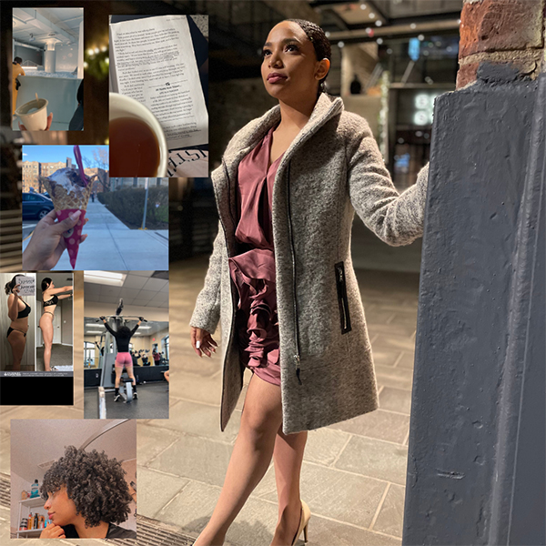

Here in sharing my raster images...I chose this pictures because they represent part of me, hoobies, lifestyle and my every day basis. I combined 6 pictures plus one as the background using the software Canva. The more difficult part of the project was choosing the pictures. I solved it by going through my pictures having in mind what i like to do, what im currently doing and my goals.
This is my vector image...I chose these colors because they represent me, who i am and somehow what i like. My source of inspiration was honeslty an app called snapchat, which has an avatar as the profile image. The most challenging part of the project was how to start it off.
GIF Animation
Next, it's my 10 seconds video animation, which consists of two ghots; a female and a male falling in love.

The next audio was my audio assignment... I decided to record the nature because its one of the things a like and represent me the most. I combien one single audio of almost one minute in total, you can hear the water, the wind, birds... and peaceful magic of the nature just in general.
Next is my p5.js Sketch - Programming is soo hard!
"